Analiza rješenja · JOI Spring Camp 2025 · Dan 4
Uiro
O ovom članku
Tekst je prijevod službene japanske prezentacije rješenja, preoblikovan u članak. Slajdovi su ugrađeni kao slike; natpis pod svakim slajdom je prijevod teksta na njemu. Dijelovi označeni kao trenerska napomena nisu u izvornoj prezentaciji — dodani su da popune korake koje slajdovi preskaču ili samo skiciraju.
Slajdovi
Zadatak
izvorni slajdovi 1–2
-
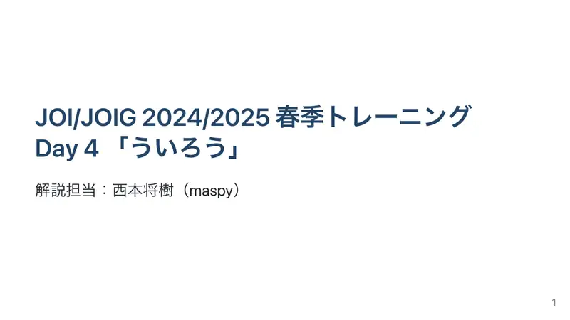
1Naslov; analiza: maspy. -
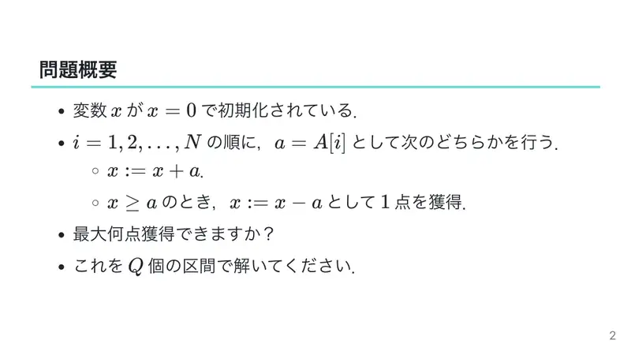
2$x=0$; za $i$ redom $x+=a$ ili (ako $x\ge a$) $x-=a$ uz bod; maksimiziraj; $Q$ intervala.
← → tipke ili klik na sliku
Podzadaci 1–3 15 bodova
Koraci algoritma
Iscrpno i DP
izvorni slajdovi 3–6
-
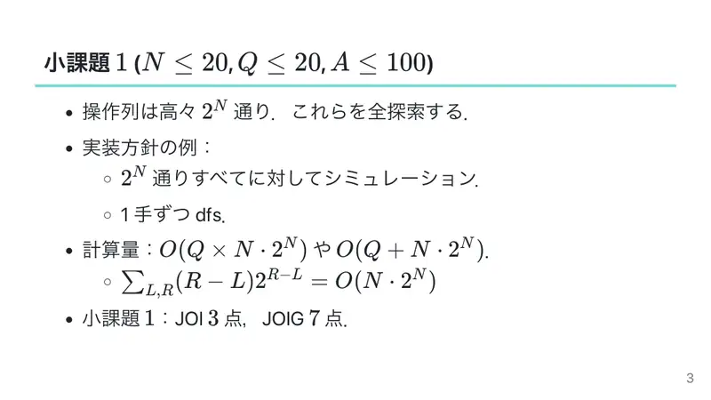
3$2^N$ nizova operacija; $O(N2^N)$ po upitu ili DFS. -
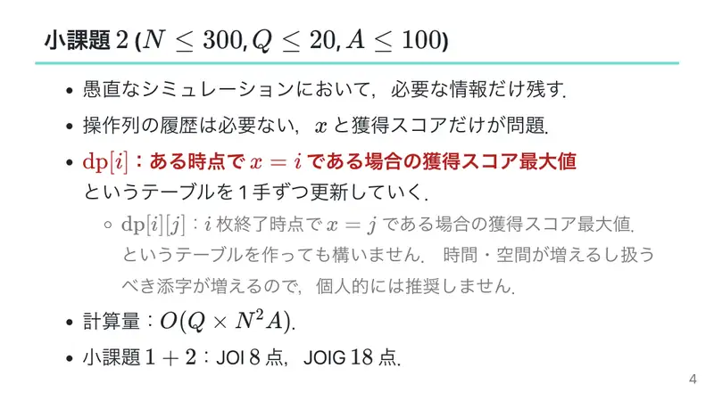
4Bitni su samo $x$ i rezultat: $dp[x]$ = max rezultat; $O(QN^2A)$. -
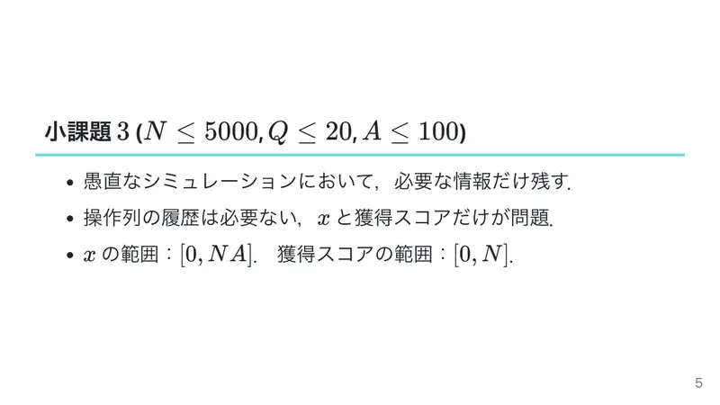
5$x\in[0,NA]$, rezultat $\in[0,N]$. -
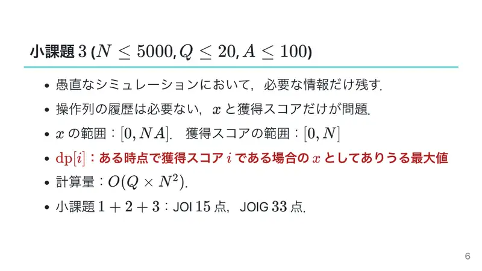
6Obrnuto: $dp[\text{rezultat}]=\max x$; $O(QN^2)$.
← → tipke ili klik na sliku
Podzadatak 4 15 bodova
Koraci algoritma
Greedy i konkavnost
izvorni slajdovi 7–12
-
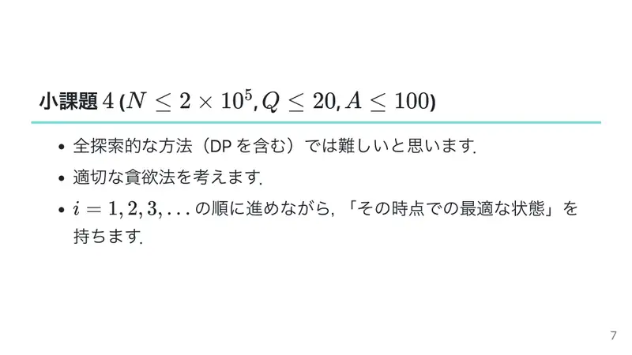
7Iscrpno/DP ne ide; greedy s „optimalnim stanjem” koje je optimalno za bilo koji nastavak. -
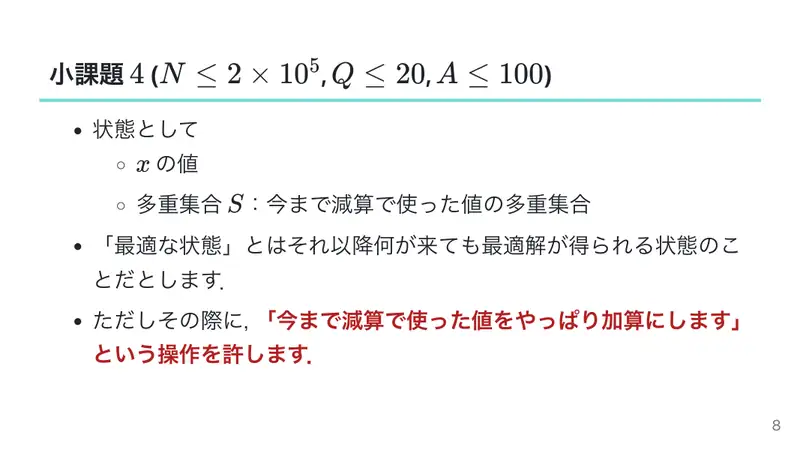
8Stanje: $x$ i multiskup $S$ oduzetih; dopušteno pokajanje. -
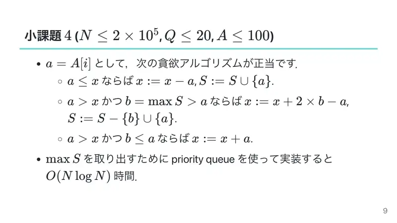
9Pravila: $a\le x$ → oduzmi; $a\gt x$, $\max S=b\gt a$ → $x+2b-a$, zamijeni $b$ s $a$; inače zbroji. Priority queue, $O(N\log N)$. -
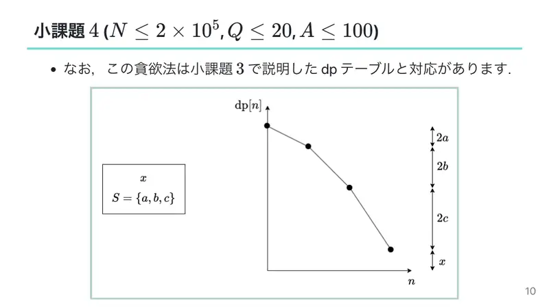
10Greedy odgovara DP tablici iz podzadatka 3. -
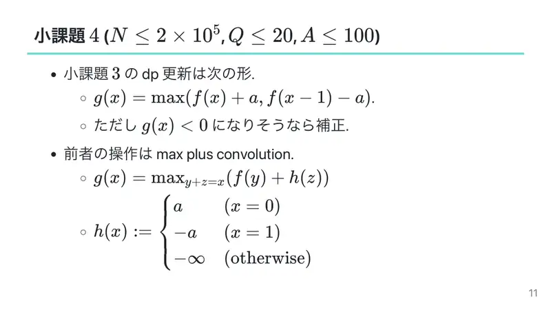
11Korak DP-a: $g(x)=\max(f(x)+a,f(x-1)-a)$ = max-plus konvolucija s $h=(a,-a,-\infty,\dots)$. -
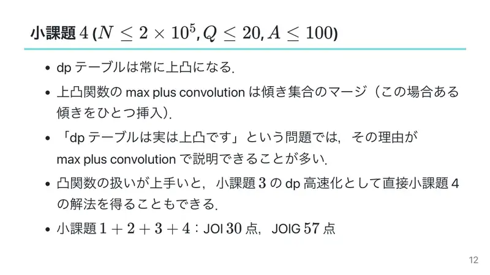
12Tablica je konkavna; konvolucija konkavnih = spajanje skupova nagiba (umetanje jednog). Iz toga se greedy može i izvesti.
← → tipke ili klik na sliku
Podzadatak 5 21 bod
Koraci algoritma
$A\le2$, segmentno stablo funkcija
izvorni slajdovi 13–18
-
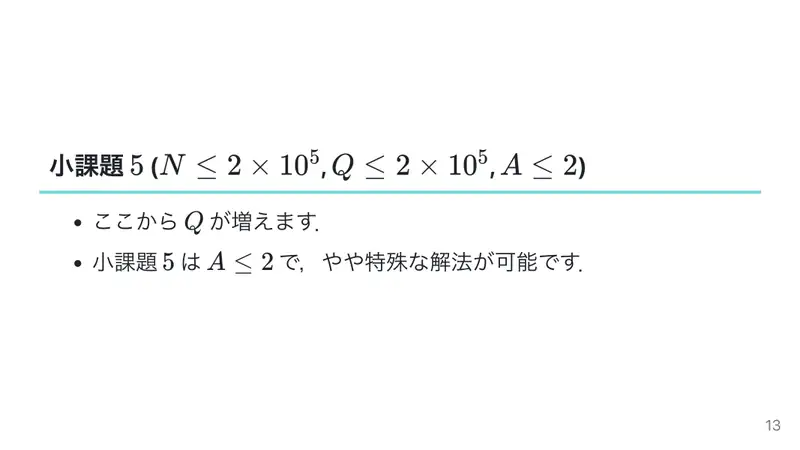
13Sad $Q$ raste; $A\le2$ ima posebno rješenje. -
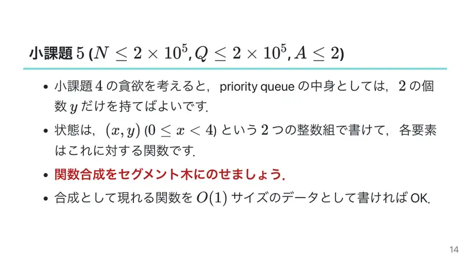
14Iz $S$ treba samo broj dvojki $y$; stanje $(x,y)$, $0\le x\lt4$; element = funkcija; kompozicije na segmentno stablo ako imaju $O(1)$ opis. -
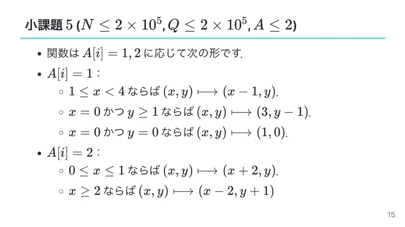
15$A=1$: $x\ge1\Rightarrow(x-1,y)$; $x=0,y\ge1\Rightarrow(3,y-1)$; $x=y=0\Rightarrow(1,0)$. $A=2$: $x\le1\Rightarrow(x+2,y)$; $x\ge2\Rightarrow(x-2,y+1)$. -
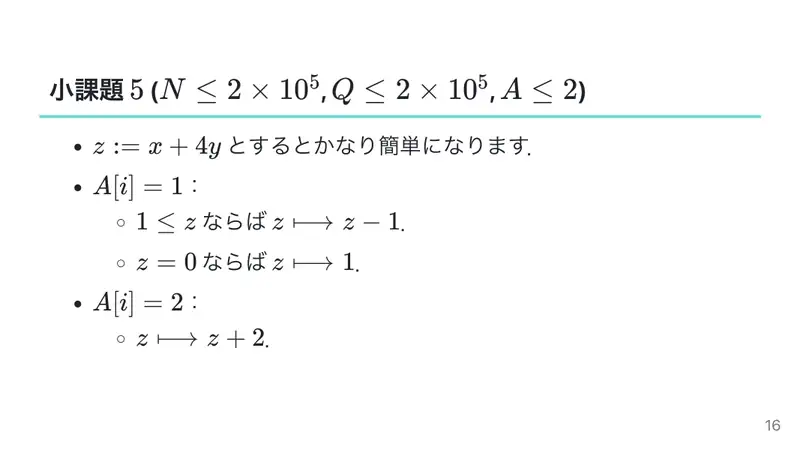
16Uz $z=x+4y$: $A=1$: $z\ge1\Rightarrow z-1$, $z=0\Rightarrow1$; $A=2$: $z+2$. -
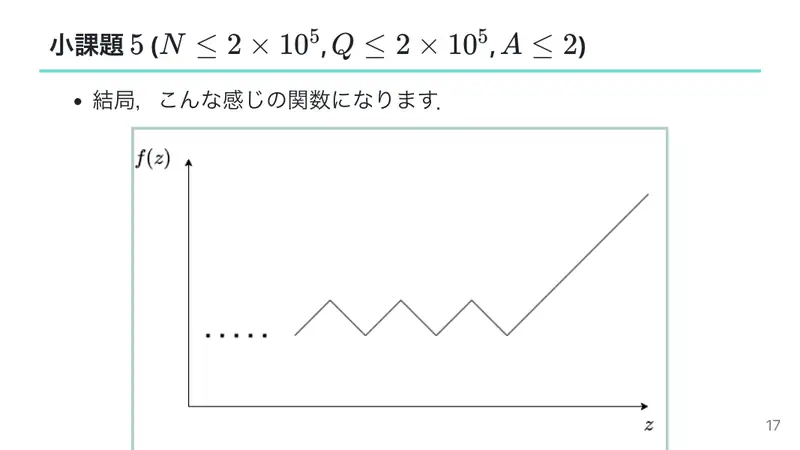
17Kompozicije: graf funkcije. -
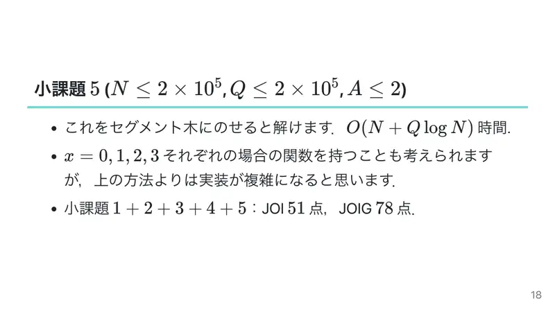
18Segmentno stablo: $O(N+Q\log N)$.
← → tipke ili klik na sliku
Puno rješenje 49 bodova
Koraci algoritma
Pragovi po vrijednosti i RMQ
izvorni slajdovi 19–27
-
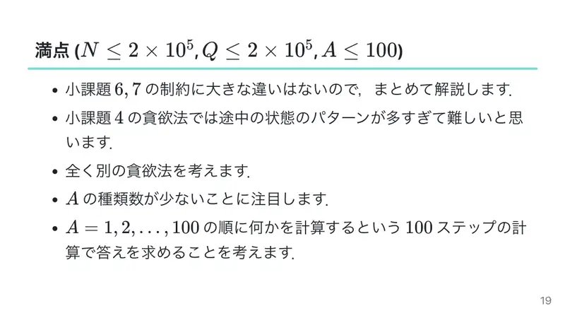
19Podzadaci 6, 7 zajedno; greedy ima previše stanja — potpuno drugačiji greedy koji iskorištava mali broj različitih vrijednosti: 100 koraka po $k$. -
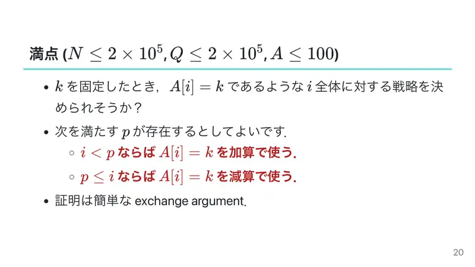
20Za fiksan $k$ postoji $p$: pojave $k$ prije $p$ zbrajamo, od $p$ oduzimamo (exchange). -
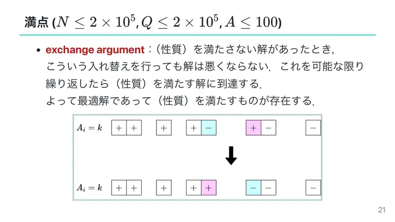
21Exchange argument: zamjena ne pogoršava; ponavljaj do svojstva; postoji optimum sa svojstvom. -
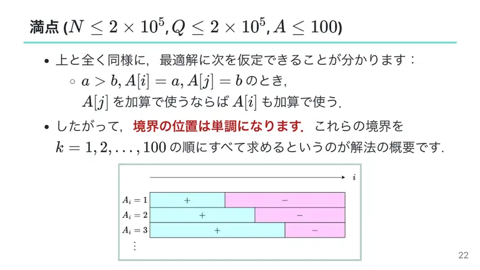
22Također: $a\gt b$, $A_i=a$, $A_j=b$: ako se $A_j$ zbraja, i $A_i$ se zbraja → pragovi monotoni; određuj ih za $k=1..100$. -
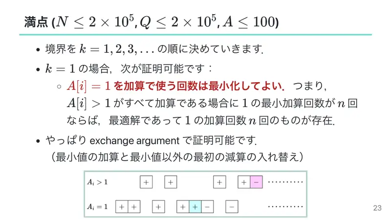
23$k=1$: broj zbrajanja jedinica smije se minimizirati (zamjena zbrajanja minimuma i prvog oduzimanja većeg). -
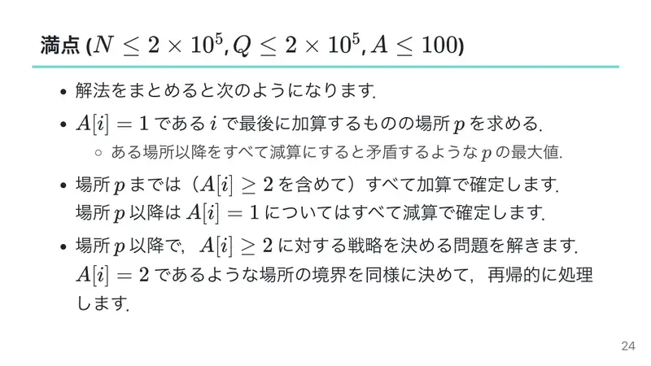
24Plan: nađi $p$ — zadnje zbrojeno $1$ (najveći $p$ takav da oduzimanje svih jedinica od $p$ vodi u protuslovlje); do $p$ sve zbrojeno; od $p$ jedinice oduzete; rekurzivno za $2$ na sufiksu itd. -
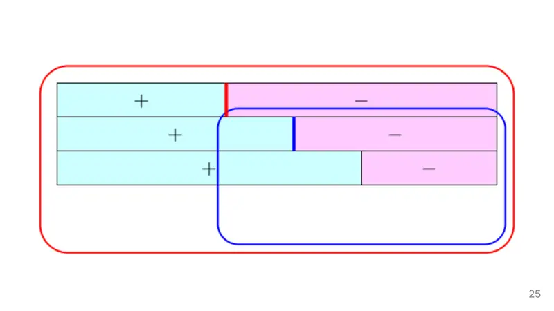
25Slika. -
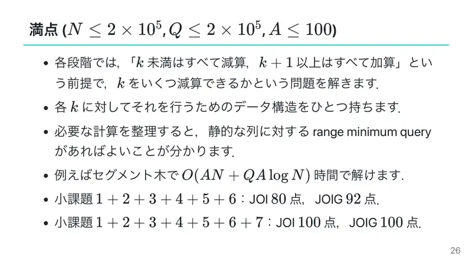
26Korak $k$: „$\lt k$ oduzeto, $\ge k+1$ zbrojeno; koliko $k$-ova može oduzeti?” — po $k$ jedna struktura; treba statički RMQ; $O(AN+QA\log N)$. -
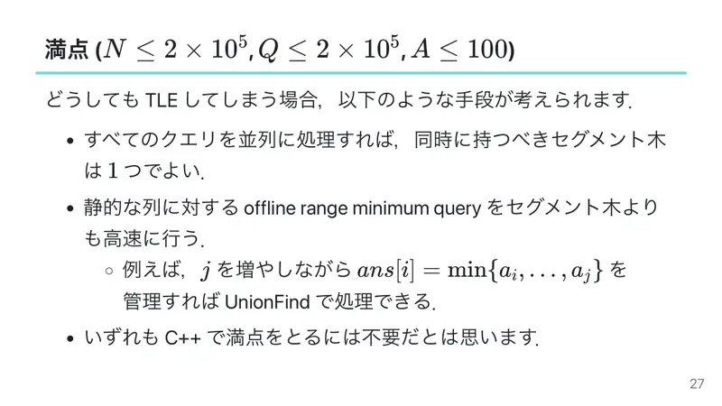
27Ako TLE: paralelno po upitima (jedno stablo), ili offline RMQ DSU-om; u C++ nepotrebno.
← → tipke ili klik na sliku
Slajdovi
Statistika
izvorni slajdovi 28–29
-
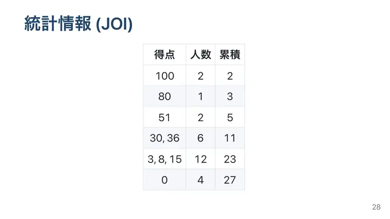
28JOI: 100 (2), 80 (1), 51 (2), 30/36 (6), 3/8/15 (12), 0 (4). -
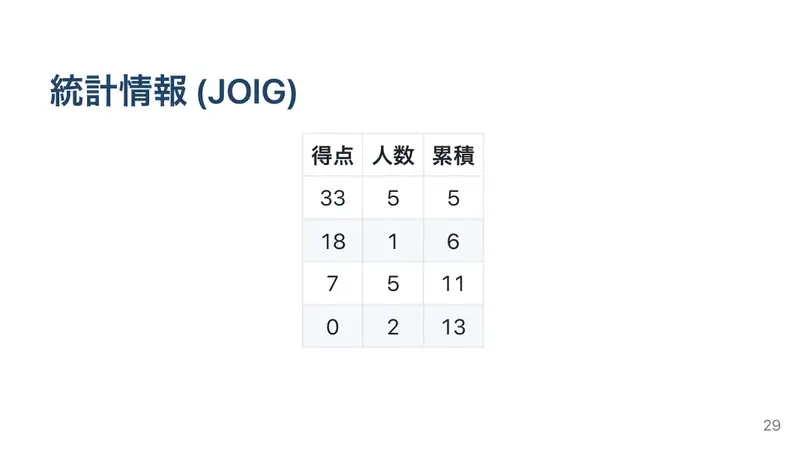
29JOIG: 33 (5), 18 (1), 7 (5), 0 (2).
← → tipke ili klik na sliku
Sažetak
- Greedy s pokajanjem = konkavan DP; za $A\le2$ funkcije na segmentnom stablu.
- Optimum: po vrijednosti prefiks zbrajanja / sufiks oduzimanja, monotoni pragovi $p_1\le\dots\le p_{100}$.
- Pragovi binarnom pretragom uz RMQ nad 100 prefiksnih nizova: $O(AN+QA\log N)$.